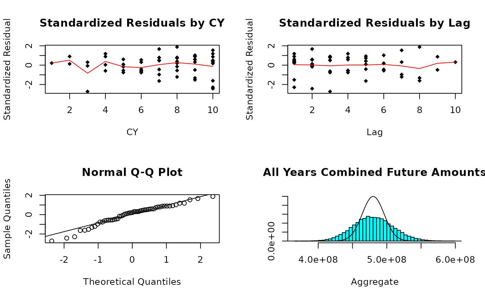

Example Stochastic Reserving
Roger Hayne
9/6/2019
stochastic_reserving.RmdInitialize Triangle
Input (B0) is a development array of cumulative averages with a the
exposures (claims) used in the denominator appended as the last column.
Assumption is for the same development increments as exposure increments
and that all development lags with no development have # been removed.
Data elements that are not available are indicated as such. This should
work (but not tested for) just about any subset of an upper triangular
data matrix.
Another requirement of this code is that the matrix contain no columns
that are all zero.
B0 <- matrix(c(670.25868,1480.24821,1938.53579,2466.25469,2837.84888,3003.52391,
3055.38674,3132.93838,3141.18638,3159.72524,
767.98833,1592.50266,2463.79447,3019.71976,3374.72689,3553.61387,3602.27898,
3627.28386,3645.5656,NA,
740.57952,1615.79681,2345.85028,2910.52511,3201.5226,3417.71335,3506.58672,
3529.00243,NA,NA,
862.11956,1754.90405,2534.77727,3270.85361,3739.88962,4003.00219,4125.30694,
NA,NA,NA,
840.94172,1859.02531,2804.54535,3445.34665,3950.47098,4185.95298,NA,NA,NA,NA,
848.00496,2052.922,3076.13789,3861.03111,4351.57694,NA,NA,NA,NA,NA,
901.77403,1927.88718,3003.58919,3881.41744,NA,NA,NA,NA,NA,NA,
935.19866,2103.97736,3181.75054,NA,NA,NA,NA,NA,NA,NA,
759.32467,1584.91057,NA,NA,NA,NA,NA,NA,NA,NA,
723.30282,NA,NA,NA,NA,NA,NA,NA,NA,NA),10,10,byrow = TRUE)
# the exposures (claims) used in the denominator
dnom <- c(39161.,38672.4628,41801.048,42263.2794,41480.8768,40214.3872,43598.5056,
42118.324,43479.4248,49492.4106)
size <- nrow(B0)
# Identify model to be used
# Berquist for the Berquist-Sherman Incremental Severity
# CapeCod for the Cape Cod
# Hoerl for the Generalized Hoerl Curve Model with trend
# Wright for the Generalized Hoerl Curve with individual accident year levels
# Chain for the Chain Ladder model
model <- "Berquist"
#model <- "CapeCod"
#model <- "Hoerl"
#model <- "Wright"
#model <- "Chain"
# Toggle graphs off if desired
graphs <- TRUE
# Toggle simulations off if desired
simulation <- TRUE
# Calculate incremental average matrix
A0 <- cbind(B0[, 1], (B0[, (2:size)] + 0 * B0[, (1:(size - 1))]) -
(B0[, (1:(size - 1))] + 0 * B0[, (2:size)]))
# Generate a matrix to reflect exposure count in the variance structure
logd <- log(matrix(dnom, size, size))
# Set up matrix of rows and columns, makes later calculations simpler
rowNum <- row(A0)
colNum <- col(A0)
#. upper_triangle_mask is a mask matrix of allowable data, upper triangular assuming same
#' development increments as exposure increments
#' msn is a mask matrix that picks off the first forecast diagonal
#' msd is a mask matrix that picks off the to date diagonal
upper_triangle_mask <- (size - rowNum) >= colNum - 1
msn <- (size - rowNum) == colNum - 2
msd <- (size - rowNum) == colNum - 1
# Amount paid to date
paid_to_date <- rowSums(B0 * msd, na.rm = TRUE)START OF MODEL SPECIFIC CODE
if (model == "Berquist") {
model_lst <- berquist(B0, paid_to_date, upper_triangle_mask)
} else if (model == "CapeCod") {
model_lst <- capecod(B0, paid_to_date, upper_triangle_mask)
} else if (model == "Hoerl") {
model_lst <- hoerl(B0, paid_to_date, upper_triangle_mask)
} else if (model == "Wright") {
model_lst <- wright(B0, paid_to_date, upper_triangle_mask)
} else if (model == "Chain") {
model_lst <- chain(B0, paid_to_date, upper_triangle_mask)
}
g_obj <- model_lst$g_obj
g_grad <- model_lst$g_grad
g_hess <- model_lst$g_hess
a0 <- model_lst$a0Negative Loglikelihood Function to be Minimized
Note that the general form of the model has parameters in addition to those in the loss model, namely the power for the variance and the constant of proprtionality that varies by column. So if the original model has k parameters with size columns of data, the total objective function has k + size + 1 parameters
l.obj <- function(a, A) {
npar <- length(a) - 2
e <- g_obj(a[1:npar])
v <- exp(-outer(logd[, 1], rep(a[npar + 1], size), "-")) * (e^2)^a[npar + 2]
t1 <- log(2 * pi * v) / 2
t2 <- (A - e) ^ 2 / (2 * v)
sum(t1 + t2, na.rm = TRUE)
}
# Gradient of the objective function
l.grad <- function(a, A) {
npar <- length(a) - 2
p <- a[npar + 2]
Av <- aperm(array(A, c(size, size, npar)), c(3, 1, 2))
e <- g_obj(a[1:npar])
ev <- aperm(array(e, c(size, size, npar)), c(3, 1, 2))
v <- exp(-outer(logd[, 1], rep(a[npar + 1], size), "-")) * (e^2)^p
vv <- aperm(array(v, c(size, size, npar)), c(3, 1, 2))
dt <- rowSums(g_grad(a[1:npar]) * ((p / ev) + (ev - Av) / vv - p *
(Av - ev)^2 / (vv * ev)),
na.rm = TRUE,
dims = 1)
yy <- 1 - (A - e) ^ 2 / v
dk <- sum(yy / 2, na.rm = TRUE)
dp <- sum(yy * log(e ^ 2) / 2, na.rm = TRUE)
c(dt, dk, dp)
}Hessian of the objective function
- e is the expectated value matrix
- v is the matrix of variances
- A, e, v all have shape c(size, size)
- The variables _v are copies of the originals to shape c(npar,size,size), paralleling the gradient of g.
- The variables _m are copies of the originals to shape c(npar,npar,size,size), paralleling the hessian of g
l.hess <- function(a, A) {
npar <- length(a) - 2
p <- a[npar + 2]
Av <- aperm(array(A, c(size, size, npar)), c(3, 1, 2))
Am <- aperm(array(A, c(size, size, npar, npar)), c(3, 4, 1, 2))
e <- g_obj(a[1:npar])
ev <- aperm(array(e, c(size, size, npar)), c(3, 1, 2))
em <- aperm(array(e, c(size, size, npar, npar)), c(3, 4, 1, 2))
v <- exp(-outer(logd[, 1], rep(a[npar + 1], size), "-")) * (e ^ 2) ^ p
vv <- aperm(array(v, c(size, size, npar)), c(3, 1, 2))
vm <- aperm(array(v, c(size, size, npar, npar)), c(3, 4, 1, 2))
g1 <- g_grad(a[1:npar])
gg <- aperm(array(g1, c(npar, size, size, npar)), c(4, 1, 2, 3))
gg <- gg * aperm(gg, c(2, 1, 3, 4))
gh <- g_hess(a[1:npar])
dtt <- rowSums(
gh * (p / em + (em - Am) / vm - p * (Am - em) ^ 2 / (vm * em)) +
gg * (
1 / vm + 4 * p * (Am - em) / (vm * em) + p * (2 * p + 1) * (Am - em) ^ 2 /
(vm * em ^ 2) - p / em ^ 2
),
dims = 2,
na.rm = TRUE
)
dkt <- rowSums((g1 * (Av - ev) + p * g1 * (Av - ev) ^ 2 / ev) / vv, na.rm = TRUE)
dtp <- rowSums(g1 * (1 / ev + (
log(ev ^ 2) * (Av - ev) + (p * log(ev ^ 2) - 1) * (Av - ev) ^ 2 / ev
) / vv),
na.rm = TRUE)
dkk <- sum((A - e) ^ 2 / (2 * v), na.rm = TRUE)
dpk <- sum(log(e ^ 2) * (A - e) ^ 2 / (2 * v), na.rm = TRUE)
dpp <- sum(log(e ^ 2) ^ 2 * (A - e) ^ 2 / (2 * v), na.rm = TRUE)
m1 <- rbind(array(dkt), c(dtp))
rbind(cbind(dtt, t(m1)), cbind(m1, rbind(cbind(dkk, c(
dpk
)), c(dpk, dpp))))
}End of funciton specificaitons now on to the minimization
Minimization
Get starting values for kappa and p parameters, default 10 and 1
ttt <- c(10, 1)For starting values use fitted objective function and assume variance for a cell is estimated by the square of the difference between actual and expected averages. Note since log(0) is -Inf we need to go through some machinations to prep the y values for the fit
E <- g_obj(a0)
yyy <- (A0 - E)^2
yyy <- logd + log(((yyy != 0) * yyy) - (yyy == 0))
sss <- na.omit(data.frame(x = c(log(E^2)), y = c(yyy)))
ttt <- array(coef(lm(sss$y ~ sss$x)))[1:2]
a0 <- c(a0, ttt)
set.seed(1) # to check reproducibility with original code
max <- list(iter.max = 10000, eval.max = 10000)Model statistics
- mean and var are model fitted values
- stres is the standardized residuals
npar <- length(a0) - 2
p <- mle$par[npar + 2]
mean <- g_obj(mle$par[1:npar])
var <- exp(-outer(logd[, 1], rep(mle$par[npar + 1], size), "-")) * (mean ^
2) ^ p
stres <- (A0 - mean) / sqrt(var)
g1 <- g_grad(mle$par[1:npar])
gg <- aperm(array(g1, c(npar, size, size, npar)), c(4, 1, 2, 3))
gg <- gg * aperm(gg, c(2, 1, 3, 4))
meanv <- aperm(array(mean, c(size, size, npar)), c(3, 1, 2))
meanm <- aperm(array(mean, c(size, size, npar, npar)), c(3, 4, 1, 2))
varm <- aperm(array(var, c(size, size, npar, npar)), c(3, 4, 1, 2))Calculate the information matrix
- Using second derivatives of the log likelihood function Second with respect to theta parameters
tt <- rowSums(sm + gg * (1 / varm + 2 * p ^ 2 / (meanm ^ 2)), dims = 2, na.rm = TRUE)Second with respect to theta and kappa
kt <- p * rowSums(sv + g1 / meanv, na.rm = TRUE)Second with respect to p and theta
Second with respect to kappa
kk <- (1 / 2) * sum(1 + s, na.rm = TRUE)Second with respect to p and kappa
Second with respect to p
Variance-covariance matrix for parameters, inverse of information matrix
vcov <- solve(inf)Simulation
Initialize simulation array to keep simulation results
Simulation for distribution of future amounts
Want 10,000 simulations, but exceeds R capacity, so do in batches of 5,000
nsim <- 5000
smsk <- aperm(array(c(upper_triangle_mask), c(size, size, nsim)), c(3, 1, 2))
smsn <- aperm(array(c(msn), c(size, size, nsim)), c(3, 1, 2))
if (simulation) {
for (i in 1:5) {
# Randomly generate parameters from multivariate normal
spar <- rmvnorm(nsim, mle$par, vcov)
# Arrays to calculate simulated means
esim <- g_obj(spar)
# Arrays to calculate simulated variances
ksim <- exp(aperm(outer(array(
spar[, c(npar + 1)], c(nsim, size)
), log(dnom), "-"), c(1, 3, 2)))
psim <- array(spar[, npar + 2], c(nsim, size, size))
vsim <- ksim * (esim ^ 2) ^ psim
# Randomly simulate future averages
temp <- array(rnorm(nsim * size * size, c(esim), sqrt(c(vsim))), c(nsim, size, size))
# Combine to total by exposure period and in aggregate
# notice separate array with name ending in "n" to capture
# forecast for next accounting period
sdnm <- t(matrix(dnom, size, nsim))
fore <- sdnm * rowSums(temp * !smsk, dims = 2)
forn <- sdnm * rowSums(temp * smsn, dims = 2)
# Cumulate and return for another 5,000
sim <- rbind(sim, cbind(fore, rowSums(fore)))
smn <- rbind(smn, cbind(forn, rowSums(forn)))
spm <- rbind(spm, spar)
}
}Print Results
model## [1] "Berquist"
model_description(model)## [1] "Berquist-Sherman Incremental Severity"
summary(sim)## V1 V2 V3 V4
## Min. :0 Min. :-1452523 Min. :-1460032 Min. :-1416929
## 1st Qu.:0 1st Qu.: 302558 1st Qu.: 811550 1st Qu.: 2807320
## Median :0 Median : 597817 Median : 1228080 Median : 3544006
## Mean :0 Mean : 642440 Mean : 1252318 Mean : 3558347
## 3rd Qu.:0 3rd Qu.: 932306 3rd Qu.: 1673686 3rd Qu.: 4290686
## Max. :0 Max. : 3508046 Max. : 4460242 Max. : 8808302
## V5 V6 V7 V8
## Min. : -6553 Min. : 5560629 Min. :20506185 Min. : 42237266
## 1st Qu.: 6227569 1st Qu.:15141382 1st Qu.:37021474 1st Qu.: 69227330
## Median : 7336299 Median :17015966 Median :40212065 Median : 74008098
## Mean : 7343317 Mean :17027739 Mean :40274082 Mean : 74154814
## 3rd Qu.: 8459679 3rd Qu.:18881648 3rd Qu.:43484551 3rd Qu.: 78916652
## Max. :15788019 Max. :29283048 Max. :63449354 Max. :110991079
## V9 V10 V11
## Min. : 84207233 Min. :155320285 Min. :366516154
## 1st Qu.:119093974 1st Qu.:198804197 1st Qu.:460324346
## Median :126196817 Median :209482103 Median :479599631
## Mean :126342190 Mean :209675354 Mean :480270601
## 3rd Qu.:133428500 3rd Qu.:220366856 3rd Qu.:499535658
## Max. :173619116 Max. :279848807 Max. :598174718
summary(smn)## V1 V2 V3 V4
## Min. :0 Min. :-1452523 Min. :-1138446 Min. :-1476281
## 1st Qu.:0 1st Qu.: 302558 1st Qu.: 272247 1st Qu.: 1626501
## Median :0 Median : 597817 Median : 505270 Median : 2200960
## Mean :0 Mean : 642440 Mean : 527492 Mean : 2230028
## 3rd Qu.:0 3rd Qu.: 932306 3rd Qu.: 758791 3rd Qu.: 2800206
## Max. :0 Max. : 3508046 Max. : 2627158 Max. : 6670925
## V5 V6 V7 V8
## Min. :-1172470 Min. : 1270164 Min. : 5239797 Min. :11507452
## 1st Qu.: 2880155 1st Qu.: 8086341 1st Qu.:18510808 1st Qu.:30127968
## Median : 3663228 Median : 9515524 Median :20882468 Median :33338663
## Mean : 3691096 Mean : 9561369 Mean :20957144 Mean :33428879
## 3rd Qu.: 4467433 3rd Qu.:11003597 3rd Qu.:23334596 3rd Qu.:36694937
## Max. : 9452336 Max. :19788052 Max. :38041131 Max. :56230971
## V9 V10 V11
## Min. :23972497 Min. : 23306626 Min. :118324354
## 1st Qu.:42126743 1st Qu.: 54269334 1st Qu.:167789490
## Median :46211701 Median : 59039646 Median :176256113
## Mean :46263910 Mean : 59065905 Mean :176368264
## 3rd Qu.:50318506 3rd Qu.: 63803067 3rd Qu.:184790407
## Max. :74988812 Max. :103912858 Max. :231225457Scatter plots of residuals & Distribution of Forecasts
if (graphs) {
#x11(title <- model_description(model))
# Prep data for lines for averages in scatter plots of standardized residuals
ttt <- array(cbind(c(rowNum + colNum - 1), c(stres)),
c(length(c(stres)), 2, 19))
sss <- t(array((1:19), c(19, length(c(stres)))))
# Plotting
par(mfrow = c(2, 2))
plot(
na.omit(cbind(c(rowNum + colNum - 1), c(stres))),
main = "Standardized Residuals by CY",
xlab = "CY",
ylab = "Standardized Residual",
pch = 18
)
lines(na.omit(list(
x = (1:19),
y = colSums(ttt[, 2, ] *
(ttt[, 1, ] == sss), na.rm = TRUE) /
colSums((ttt[, 1, ] == sss) +
0 *
ttt[, 2, ], na.rm = TRUE)
)), col = "red")
plot(
na.omit(cbind(c(colNum), c(stres))),
main = "Standardized Residuals by Lag",
xlab = "Lag",
ylab = "Standardized Residual",
pch = 18
)
lines(na.omit(list(
x = colNum[1, ],
y = colSums(stres, na.rm = TRUE) /
colSums(1 + 0 * stres, na.rm = TRUE)
)), col = "red")
qqnorm(c(stres))
qqline(c(stres))
if (simulation) {
proc <- list(x = (density(sim[, 11]))$x,
y = dnorm((density(sim[, 11]))$x,
sum(matrix(c(
dnom
), size, size) * mean * !upper_triangle_mask),
sqrt(sum(
matrix(c(dnom), size, size) ^ 2 * var * !upper_triangle_mask
))))
MASS::truehist(sim[, 11],
ymax = max(proc$y),
main = "All Years Combined Future Amounts",
xlab = "Aggregate")
lines(proc)
}
} ## Summary From Simulation
Summary of mean, standard deviation, and 90% confidence interval from simulation, similar for one-period forecast
sumr <- matrix(0, 0, 4)
sumn <- matrix(0, 0, 4)
for (i in 1:11) {
sumr <- rbind(sumr, c(mean(sim[, i]), sd(sim[, i]), quantile(sim[, i], c(.05, .95))))
sumn <- rbind(sumn, c(mean(smn[, i]), sd(smn[, i]), quantile(smn[, i], c(.05, .95))))
}
sumr## 5% 95%
## [1,] 0.0 0.0 0.00 0
## [2,] 642440.5 481028.8 -44194.36 1501201
## [3,] 1252318.1 648086.8 234536.28 2350542
## [4,] 3558346.6 1140237.1 1736139.47 5459264
## [5,] 7343316.8 1685230.7 4618772.27 10135134
## [6,] 17027739.1 2812746.4 12455686.23 21698143
## [7,] 40274081.9 4840499.9 32377990.92 48358166
## [8,] 74154813.9 7300843.4 62309918.99 86306505
## [9,] 126342190.5 10639635.7 109032027.02 144116409
## [10,] 209675353.5 15905776.4 183850667.27 236026995
## [11,] 480270600.9 29296749.7 432905077.05 529557186
sumn## 5% 95%
## [1,] 0.0 0.0 0.00 0
## [2,] 642440.5 481028.8 -44194.36 1501201
## [3,] 527492.0 376363.7 -37645.58 1173939
## [4,] 2230028.1 900647.6 790310.82 3758650
## [5,] 3691095.9 1201650.8 1761276.09 5701639
## [6,] 9561369.2 2183081.0 6055215.06 13228795
## [7,] 20957144.4 3610684.4 15092490.22 26953460
## [8,] 33428879.0 4931632.4 25433851.64 41583251
## [9,] 46263909.9 6136563.8 36357479.01 56377102
## [10,] 59065904.7 7160890.5 47441520.52 70937231
## [11,] 176368263.7 12708050.9 155788022.09 197482374